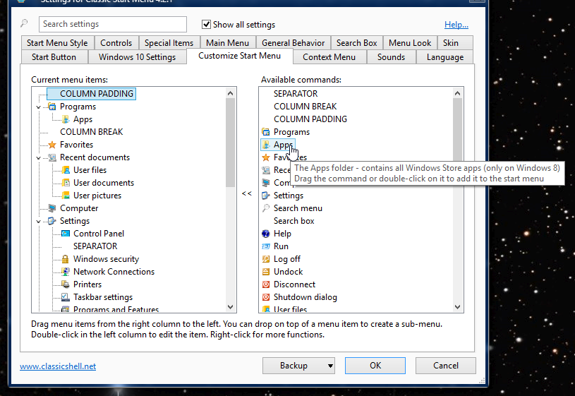

| Classic Shell http://www.classicshell.net/forum/ |
|
| Minor ToolTip Bug http://www.classicshell.net/forum/viewtopic.php?f=19&t=4456 |
Page 1 of 1 |
| Author: | NoelC [ Tue Apr 07, 2015 12:31 pm ] |
| Post subject: | Minor ToolTip Bug |
I noticed that at least one ToolTip says something like "Windows 8 only". Just a heads up that you might want to search the whole project and find any references specifically to Windows 8. -Noel |
|
| Author: | Jcee [ Tue Apr 07, 2015 12:51 pm ] |
| Post subject: | Re: Minor ToolTip Bug |
Well windows 8.1 is a subset of windows 8.... so its kinda not a bug.. also I would imagine its worded that way for translation... |
|
| Author: | NoelC [ Tue Apr 07, 2015 4:20 pm ] |
| Post subject: | Re: Minor ToolTip Bug |
I was thinking of Win 10, actually. Maybe the wording could be "Windows 8 or later". -Noel |
|
| Author: | Jcee [ Tue Apr 07, 2015 5:29 pm ] |
| Post subject: | Re: Minor ToolTip Bug |
windows 10 isnt officially supported.. it will likely get its own tab with some of the same features shared with the windows 8 tab (windows 7 gets some settings that windows 8 doesnt) |
|
| Author: | Gaurav [ Fri Apr 10, 2015 2:30 am ] |
| Post subject: | Re: Minor ToolTip Bug |
Which setting's tooltip says that? |
|
| Author: | NoelC [ Fri Apr 10, 2015 4:33 am ] |
| Post subject: | Re: Minor ToolTip Bug |
The instance I ran across was the Apps entry in the Customize Start Menu section (shown running on Win 10 build 10049). I was vague in my original post because a search of the sources would seem to be in order to turn up all cases of this class of issue.  -Noel |
|
| Author: | Gaurav [ Fri Apr 10, 2015 4:38 am ] |
| Post subject: | Re: Minor ToolTip Bug |
Yes good point. It could be replaced by "Windows 8 and later". |
|
| Page 1 of 1 | All times are UTC - 8 hours [ DST ] |
| Powered by phpBB® Forum Software © phpBB Group https://www.phpbb.com/ |
|